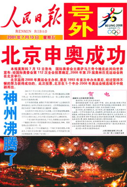

新闻速递
2008北京申奥成功，神州大地欢呼雀跃！
新滑社 2001-7-14
|  |
来源：人民日报 |
{kind=link}
2001年7月13日，是全国人民永远难忘的日子。随着国际奥委会主席萨马兰奇的一声“Being”，全中国都沸腾了，举国上下成为一片欢呼的海洋。中央电视台随即在屏幕上打出了四个大字“我们赢了”，各地也举办了多种多样的庆祝活动，可以说北京申奥的胜利也是中国政府公关的胜利。
北京申奥过程是经过精心策划和实施的。公关主体是中国，是北京。李岚清副总理在申奥报告陈述时说： “在过去20年改革开放的过程中，中国已成为世界上经济发展最快的国家之一。我们将继续保持政治稳定、社会进步和经济繁荣。”国际奥委会执委何振梁则说：“选择北京，你们将把奥运会第一次带到世界上拥有1／5人口的国家，让十几亿人民的创造力和奉献精神为奥林匹克服务。任职国际奥委会主席长达21年之久的萨马兰奇卸任时最大的心愿就是把奥运会带到世界人口最多，又有巨大经济潜力的中国。正如刘淇市长在申奥成功报告会上所说：“北京申奥成功是因为有了日益强大繁荣的祖国作后盾。”由此可见，中国已经成为受世人关注、有重要影响力的大国。
北京申奥成功的一个重要原因是具有最高的民众支持率。95％支持北京申奥的民众和受中国奥运情结感染的国际奥委会委员，这是北京申奥最重要的目标公众。挪威籍国际奥委会委员乔恩·奥拉夫感慨万分地说： “北京申奥给我印象最深的是来自中国民众的支持。就我个人来说，我从北京得到的申奥信息是其他4个城市之和的2倍。所有这些信息里都包含着同一个主题，那就是给正在腾飞的中国再一个全面腾飞的机会吧!”。
北京奥申委确定了“新北京，新奥运”的申办口号，提出了“绿色奥运，科技奥运，人文奥运”的申办理念，提供了一部长达500页，涉及17个主题的申办报告，并把“95％的公众支持率”的调查结果写进其中，还制作了精美的北京申奥宣传片。投票前夕的新闻发布会上，北京申奥委秘书长慷慨陈词：“我们有信心创造历史。这将是奥运会第一次来有近13亿人口和5000年文明史的东方古国。”“在2008年奥运会期间，各国媒体可以享受百分之百的新闻报道自由。”
2001年4月4日，是申奥揭晓倒计时100天，北京奥申委提出了4月4日为全国支持北京申奥统一行动日的倡议。这个倡议得到了全球华人的积极响应，申奥热潮风起云涌。5月8日，全球华人支持北京申奥联合委员会在德国杜塞尔多夫市举办了以“全球华人心连心，齐心协力申奥运”为主题的系列活动。6月16日，中华全国体育总会和中国台北田协共同举办了“北京奥运·炎黄之光”海峡两岸长跑活动。6月23日，美国西部华人在雄伟的居庸关举办了祝北京申奥成功的“奥运龙——大地艺术作品展示”活动。所有这些都是加强内部公共关系行为的体现。
以上信息来源于网络
纯属娱乐
编辑于2019-12-08晚
搜狗百科：https://baike.sogou.com/v53369.htm?fromTitle=ASCII
百度百科：https://baike.baidu.com/item/ASCII/309296?fr=aladdin
维基百科：https://zh.wikipedia.org/wiki/ASCII